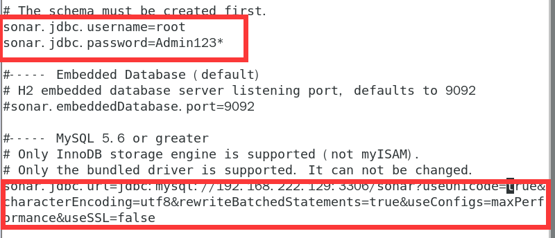
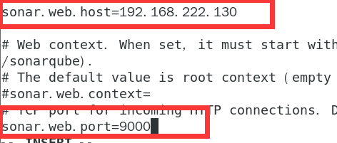

9.1、SonarQube
1、环境要求
1.1、jdk1.8
1.2、SonarQube不得在root账户下运行
1.3、
vm.max_map_count 大于或等于 262144
fs.file-max 大于或等于 65536
运行SonarQube的用户可以打开至少 65536个 文件描述符
运行SonarQube的用户可以打开至少2048个线程，
seccomp已编译 到内核中
内核参数
您可以使用以下命令查看值：
sysctl vm.max_map_count
sysctl fs.file-max
ulimit -n
ulimit -u
您可以通过以root身份运行以下命令，为当前会话动态设置它们 ：
sysctl -w vm.max_map_count=262144
sysctl -w fs.file-max=65536
ulimit -n 65536
ulimit -u 2048
要更永久地设置这些值，您必须更新 /etc/sysctl.d/99-sonarqube.conf （或 您希望的/etc/sysctl.conf）以反映这些值。
如果运行SonarQube（ 本例中为sonarqube）的用户没有至少65536个开放描述符的权限，则必须在/etc/limits.d/99-sonarqube.conf （或 /etc/limits.conf）中插入此行。 如你所愿） ：
sonarqube - nofile 65536
sonarqube - nproc 2048
seccomp过滤器 默认情况下，Elasticsearch 使用的是seccomp过滤器。在大多数发行版中，此功能在内核中激活，但在Red Hat Linux 6等发行版中，此功能已停用。如果您使用的是没有此功能的发行版，并且无法升级到激活了seccomp的较新版本，则必须通过更新sonar.properties中的sonar.search.javaAdditionalOpts 来显式停用此安全层 ：
sonar.search.javaAdditionalOpts=-Dbootstrap.system_call_filter=false您可以使用以下命令检查内核上是否有seccomp：
$ grep SECCOMP /boot/config-$(uname -r)
如果你的内核有seccomp，你会看到：
CONFIG_HAVE_ARCH_SECCOMP_FILTER=y
CONFIG_SECCOMP_FILTER=y
CONFIG_SECCOMP=y
2、安装
2.1、下载解压到/usr/local下
unzip -d /usr/local sonarqube-6.7.6.zip
2.2、配置环境变量
vi /etc/profile
export SONAR_HOME=/usr/local/sonarqube-6.7.6
export PATH=$PATH:${SONAR_HOME}/bin
保存
立即生效
source /etc/profile
2.3、修改配置文件
连接bigdata3的mysql5.7
cd /usr/local/sonarqube-6.7.6/conf
vi sonar.properties


3、新建用户sonar，密码xiaolanyun
终端：
adduser sonar
passwd sonar
对创建的新用户进行sudo操作授权
#搜索sudoers文件
whereis sudoers
#查看权限
ls -l /etc/sudoers
#只有可读权限
#加入可写权限
chmod -v u+w /etc/sudoers
#将sonar用户添加到sudoers文件中
vi /etc/sudoers
sonar ALL=(ALL) ALL
#将sudoers文件权限改回去
chmod -v u-w /etc/sudoers
#测试新用户sonar进行登陆，使用
su sonar
切换用户
4、修改sonarqube-6.7.6目录和用户组为sonar
chown -R sonar:sonar sonarqube-6.7.6
5、设置打开文件数和线程数
sudo vi /etc/sysctl.conf
vm.max_map_count=262144
fs.file-max=65536
sysctl -p
重启
sudo vi etc/security/limits.conf
* soft nofile 65536
* hard nofile 65536
* soft nproc 2048
* hard nproc 2048
重启
查看
sysctl vm.max_map_count
sysctl fs.file-max
ulimit -n
ulimit -u
6、重新启动sonar
cd /usr/local/sonarqube-6.7.6
cd /usr/local/sonarqube-6.7.6/bin/linux-x86-64
./sonar.sh stop
Stopping SonarQube...
SonarQube was not running.
7、问题总结
查看日志
cd /usr/local/sonarqube-6.7.6/logs
tail -n 100 sonar.log
四个日志一个一个排查